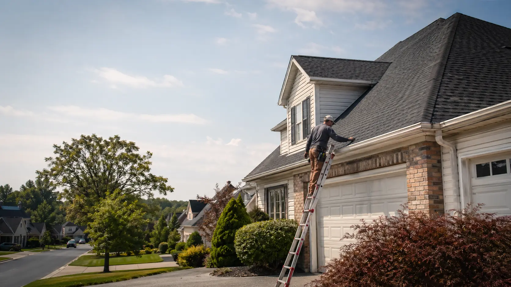
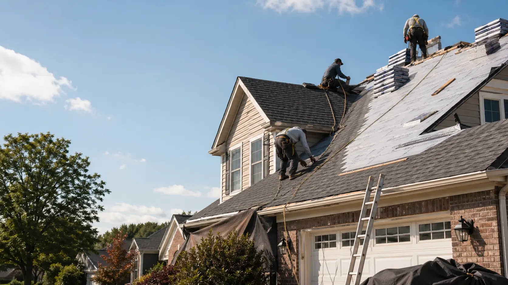

No. This website is a free referral service that helps homeowners connect with independent local roofing providers. RoofBridge Connect does not perform roofing work directly.

Residential roofing help
Connect With Local Roofing Services for Repairs, Replacement & Installation
Request roofing help and get connected with independent local providers for roof repair, roof replacement, roof installation, inspections, and storm-related roofing needs.
Local provider matching
Repair, replacement & installation
Homeowner-focused guidance
Independent contractors

Not sure what to request?
Start with the closest category. Independent providers may discuss whether repair, replacement, installation, or inspection is the more relevant next step.
Core roofing requests
Choose the roofing conversation that fits your situation.
RoofBridge Connect helps homeowners organize a request before speaking with independent local providers. The goal is not to diagnose the roof online, but to make the first conversation clearer.
Free homeowner request
Connect with independent local roofing providers without sorting through the search alone.
Request Estimate
Clear next steps
How the roofing match process works
A roofing issue should not turn into a confusing search. Start with a short request, then use provider responses to compare scope, timing, credentials, and next steps.
Location-based matching
Verify license and insurance
Compare written estimates
Start a roofing request
-
01
Share the basics
ZIP code, service category, contact details, and a short note about the concern.
-
02
Request gets routed
Your details help connect the request with independent local providers where available.
-
03
Providers may follow up
Timing can depend on location, weather, project type, and provider capacity.
-
04
You choose the next step
Compare estimates, scope, timing, credentials, insurance, and written terms before hiring.
Example situations
Common Roofing Situations Homeowners Ask About
Images are for illustrative purposes and may feature models or example project scenarios. They do not imply RoofBridge Connect completed any project.
About the platform
Roofing decisions are easier when the request is organized.
RoofBridge Connect is a homeowner assistance and referral platform. It helps homeowners describe roofing needs, understand common service paths, and connect with independent local roofing providers. It is not a direct roofing contractor and does not perform roofing work.
Learn About RoofBridge Connect
Why homeowners use it
Less guessing before you talk to a roofing provider.
RoofBridge Connect is useful when you know something may be wrong with the roof, but you are not sure whether to ask about repair, replacement, installation, or inspection. The platform helps organize that first request so the next conversation starts with the right details.
Important:
Providers are independent. Homeowners should still compare estimates, verify licensing and insurance, and review written project terms before hiring anyone.
What this helps with
-
1
Describe the issue clearly
Leak, storm concern, missing shingles, aging roof, new build, or another residential roofing need.
-
2
Route the request locally
Independent providers may contact you based on ZIP code, project type, and availability.
-
3
Compare the next step
Use the first conversation to understand whether repair, replacement, installation, or inspection makes sense to discuss.
-
4
Stay in control
There is no obligation to use a provider. Any estimate, price, schedule, or agreement is between you and that provider.
Questions first
Roofing referral FAQ
These answers explain how the platform works and what homeowners should verify before hiring any provider.
Homeowners can request help with roof repair, roof replacement, roof installation, roof inspections, leak concerns, storm damage, and related residential roofing needs.
Timing depends on your location, project type, and provider availability. After submitting a request, independent providers may contact you to discuss your roofing needs.
Yes. Homeowners are responsible for confirming that any contractor they hire has the required license, insurance, and qualifications for the work being performed.
This site is a free service to assist homeowners in connecting with local service providers. Any project cost or agreement is between the homeowner and the independent provider.
Ready when you are
Need Help With a Roofing Issue?
Request roofing help in minutes and get connected with independent local roofing providers. Service availability may vary.